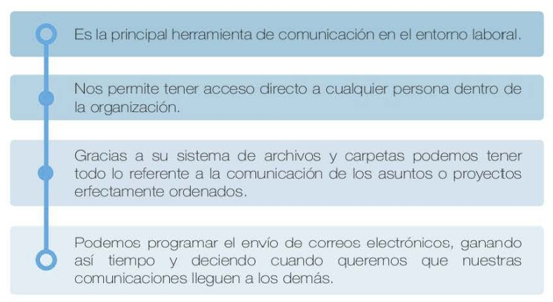
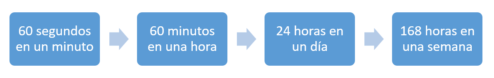

EI tiempo es uno de los conceptos más estudiados de la historia de la humanidad.
En palabras de Julián Pérez Porto y María Merino podemos decir que tiempo es un concepto, proveniente del latín tempus, que se utiliza para nombrar a una magnitud de carácter físico que se emplea para realizar la medición de 10 que dura algo que es susceptible de cambio.
Cuando una cosa pasa de un estado a otro, es decir, cuando pasamos de una situación a otra y dicho cambio es advertido por un observador, el periodo resultante que puede cuantificarse y medirse se denomina tiempo.
Gracias al desarrollo del concepto tiempo podemos organizar los hechos de manera secuencial en:
Este orden deja establecido:

La sociedad actual, marcada sobre todo por la gran velocidad a la que se desarrolla la tecnología y los cambios sociales, está ocasionando que estemos sufriendo una auténtica revolución referida al concepto de tiempo.
Todo hoy en día avanza muy deprisa, tanto que parece que el tiempo es algo cada vez más escaso y que además tenemos comprimido.
Ejemplo
Entre las expresiones más habituales que forman parte de nuestro día a día aparecen con fuerza:
• Cuando tengas un minuto.
• Un día que tengas tiempo.
• Me falta tiempo.
• Los días sólo tienen 24 horas.
• Perder el tiempo.
• Ganar tiempo.
• No tengo tiempo.
Todas estas expresiones, que nos acompañan diariamente, nos sirven para entender la importancia que el tiempo tiene para cada uno de nosotros, de este modo, es importante tener presente que:

Tras asumir que todos disponemos de las mismas horas, llegamos a la conclusión de que el tiempo ni se ahorra ni se almacena, por lo que debemos aprender a gestionarlo eficazmente.
Visto desde otra perspectiva, no se trata de cuánto tiempo tenemos, sino de cómo lo utilizamos, y ahí es donde encontramos la gran asignatura pendiente que a lo largo de estas páginas vamos a trabajar.
Por otro lado, desde el punto de vista profesional, debemos tener claro dos aspectos que resultan fundamentales para comprender la importancia de este concepto:
DINERO - RECURSO
El tiempo es dinero. Y aunque somos reacios a derrochar nuestro dinero, en muchos casos no nos importa derrochar nuestro tiempo, perdiendo de vista que, en el ámbito de la empresa, las horas de trabajo tienen un coste económico. Aprender a optimizarlo nos convierte en mejores gestores de este recurso tan limitado. Dicho de otro modo, aunque lo podemos emplear siguiendo nuestro criterio y adaptándolo a las necesidades del momento, hemos de ser conscientes de en qué en función de cómo decidamos usarlo, éste tendrá un coste u otro.
El tiempo es un recurso. Como hemos comentado, el tiempo se convierte en un recurso dentro de la empresa y como tal debemos aprender a gestionarlo. Aquí es importante comprender que en muchos casos el tiempo dedicado a una tarea, no es directamente proporcional a la calidad de la misma. Esto quiere decir que, en ocasiones, dedicamos tiempo en exceso o en defecto que repercuten positiva o negativamente en nuestro desempeño como profesionales.